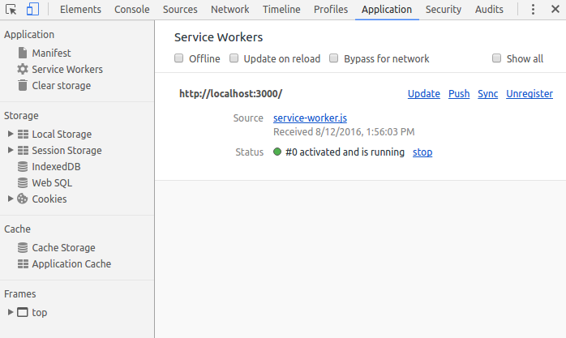
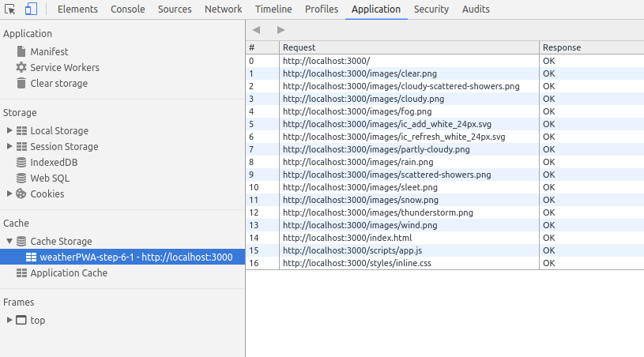

Progressive Web Apps have to be fast, and installable, which means that they work online, offline, and on intermittent, slow connections. To achieve this, we need to cache our app shell using service worker, so that it's always available quickly and reliably.
If you're unfamiliar with service workers, you can get a basic understanding by reading Introduction To Service Workers about what they can do, how their lifecycle works and more. Once you've completed this code lab, be sure to check out the Debugging Service Workers code lab for a more indepth look at how to work with service workers.
Features provided via service workers should be considered a progressive enhancement, and added only if supported by the browser. For example, with service workers you can cache the app shell and data for your app, so that it's available even when the network isn't. When service workers aren't supported, the offline code isn't called, and the user gets a basic experience. Using feature detection to provide progressive enhancement has little overhead and it won't break in older browsers that don't support that feature.
The first step to making the app work offline is to register a service worker, a script that allows background functionality without the need for an open web page or user interaction.
This takes two simple steps:
First, we need to check if the browser supports service workers, and if it does, register the service worker. Add the following code to app.js (after the // TODO add service worker code here comment):
if ('serviceWorker' in navigator) {
navigator.serviceWorker
.register('./service-worker.js')
.then(function() { console.log('Service Worker Registered'); });
}When the service worker is registered, an install event is triggered the first time the user visits the page. In this event handler, we will cache all the assets that are needed for the application.
When the service worker is fired, it should open the caches object and populate it with the assets necessary to load the App Shell. Create a file called service-worker.js in your application root folder (which should be your-first-pwapp-master/work directory). This file must live in the application root because the scope for service workers is defined by the directory in which the file resides. Add this code to your new service-worker.js file:
var cacheName = 'weatherPWA-step-6-1';
var filesToCache = [];
self.addEventListener('install', function(e) {
console.log('[ServiceWorker] Install');
e.waitUntil(
caches.open(cacheName).then(function(cache) {
console.log('[ServiceWorker] Caching app shell');
return cache.addAll(filesToCache);
})
);
});First, we need to open the cache with caches.open() and provide a cache name. Providing a cache name allows us to version files, or separate data from the app shell so that we can easily update one but not affect the other.
Once the cache is open, we can then call cache.addAll(), which takes a list of URLs, then fetches them from the server and adds the response to the cache. Unfortunately, cache.addAll() is atomic, if any of the files fail, the entire cache step fails!
Alright, let's start getting familiar with how you can use DevTools to understand and debug service workers. Before reloading your page, open up DevTools, go the Service Worker pane on the Application panel. It should look like this.
When you see a blank page like this, it means that the currently open page does not have any registered service workers.
Now, reload your page. The Service Worker pane should now look like this.

When you see information like this, it means the page has a service worker running.
OK, now we're are going to take a brief detour and demonstrate a gotcha that you may encounter when developing service workers. To demonstrate, let's add an activate event listener below the install event listener in your service-worker.js file.
self.addEventListener('activate', function(e) {
console.log('[ServiceWorker] Activate');
});The activate event is fired when the service worker starts up.
Open up the DevTools Console and reload the page, switch to the Service Worker pane in the Application panel and click inspect on the activated service worker. You expect to see the [ServiceWorker] Activate message logged to the console, but it didn't happen. Check out your Service Worker pane and you can see that the new service worker (that includes the activate event listener) appears to be in a "waiting" state.

Basically, the old service worker continues to control the page as long as there is a tab open to the page. So, you could close and re-open the page or press the skipWaiting button, but a longer-term solution is to just enable the Update on Reload checkbox on the Service Worker pane of DevTools. When this checkbox is enabled, the service worker is forcibly updated every time that the page reloads.
Enable the update on reload checkbox now and reload the page to confirm that the new service worker gets activated.
Note: You may see an error in the Service Worker pane of the Application panel similar to the one below, it's safe to ignore this error.

That's all for now regarding inspecting and debugging service workers in DevTools. We'll show you some more tricks later. Let's get back to building your app.
Let's expand on the activate event listener to include some logic to update the cache. Update your code to match the code below.
self.addEventListener('activate', function(e) {
console.log('[ServiceWorker] Activate');
e.waitUntil(
caches.keys().then(function(keyList) {
return Promise.all(keyList.map(function(key) {
if (key !== cacheName) {
console.log('[ServiceWorker] Removing old cache', key);
return caches.delete(key);
}
}));
})
);
return self.clients.claim();
});This code ensures that your service worker updates its cache whenever any of the app shell files change. In order for this to work, you'd need to increment the cacheName variable at the top of your service worker file.
The last statement fixes a corner-case which you can read about in the (optional) information box below.
Finally, let's update the list of files required for the app shell. In the array, we need to include all of the files our app needs, including images, JavaScript, stylesheets, etc. Near the top of your service-worker.js file, replace var filesToCache = []; with the code below:
var filesToCache = [
'/',
'/index.html',
'/scripts/app.js',
'/styles/inline.css',
'/images/clear.png',
'/images/cloudy-scattered-showers.png',
'/images/cloudy.png',
'/images/fog.png',
'/images/ic_add_white_24px.svg',
'/images/ic_refresh_white_24px.svg',
'/images/partly-cloudy.png',
'/images/rain.png',
'/images/scattered-showers.png',
'/images/sleet.png',
'/images/snow.png',
'/images/thunderstorm.png',
'/images/wind.png'
];Our app doesn't work offline quite yet. We've cached the app shell components, but we still need to load them from the local cache.
Service workers provide the ability to intercept requests made from our Progressive Web App and handle them within the service worker. That means we can determine how we want to handle the request and potentially serve our own cached response.
For example:
self.addEventListener('fetch', function(event) {
// Do something interesting with the fetch here
});Let's now serve the app shell from the cache. Add the following code to the bottom of your service-worker.js file:
self.addEventListener('fetch', function(e) {
console.log('[ServiceWorker] Fetch', e.request.url);
e.respondWith(
caches.match(e.request).then(function(response) {
return response || fetch(e.request);
})
);
});Stepping from inside, out, caches.match() evaluates the web request that triggered the fetch event, and checks to see if it's available in the cache. It then either responds with the cached version, or uses fetch to get a copy from the network. The response is passed back to the web page with e.respondWith().
Your app is now offline-capable! Let's try it out.
Reload your page and then go to the Cache Storage pane on the Application panel of DevTools. Right click Cache Storage, pick Refresh Caches, expand the section and you should see the name of your app shell cache listed on the left-hand side. When you click on your app shell cache you can see all of the resources that it has currently cached.

Now, let's test out offline mode. Go back to the Service Worker pane of DevTools and enable the Offline checkbox. After enabling it, you should see a little yellow warning icon next to the Network panel tab. This indicates that you're offline.

Reload your page and... it works! Kind of, at least. Notice how it loads the initial (fake) weather data.

Check out the else clause in app.getForecast() to understand why the app is able to load the fake data.
The next step is to modify the app and service worker logic to be able to cache weather data, and return the most recent data from the cache when the app is offline.
Tip: To start fresh and clear all saved data (localStorage, indexedDB data, cached files) and remove any service workers, use the Clear storage pane in the Application tab.
As previously mentioned, this code must not be used in production because of the many unhandled edge cases.
For example this caching method requires you to update the cache key every time content is changed, otherwise, the cache will not be updated, and the old content will be served. So be sure to change the cache key with every change as you're working on your project!
Another downside is that the entire cache is invalidated and needs to be re-downloaded every time a file changes. That means fixing a simple single character spelling mistake will invalidate the cache and require everything to be downloaded again. Not exactly efficient.
There's another important caveat here. It's crucial that the HTTPS request made during the install handler goes directly to the network and doesn't return a response from the browser's cache. Otherwise the browser may return the old, cached version, resulting in the service worker cache never actually updating!
Our app uses a cache-first strategy, which results in a copy of any cached content being returned without consulting the network. While a cache-first strategy is easy to implement, it can cause challenges in the future. Once the copy of the host page and service worker registration is cached, it can be extremely difficult to change the configuration of the service worker (since the configuration depends on where it was defined), and you could find yourself deploying sites that are extremely difficult to update!
So how do we avoid these edge cases? Use a library like sw-precache, which provides fine control over what gets expired, ensures requests go directly to the network and handles all of the hard work for you.
Debugging service workers can be a challenge, and when it involves caching, things can become even more of a nightmare if the cache isn't updated when you expect it. Between the typical service worker life cycle and bug in your code, you may become quickly frustrated. But don't. There are some tools you can use to make your life easier.
In some cases, you may find yourself loading cached data or that things aren't updated as you expect. To clear all saved data (localStorage, indexedDB data, cached files) and remove any service workers, use the Clear storage pane in the Application tab.
Some other tips: